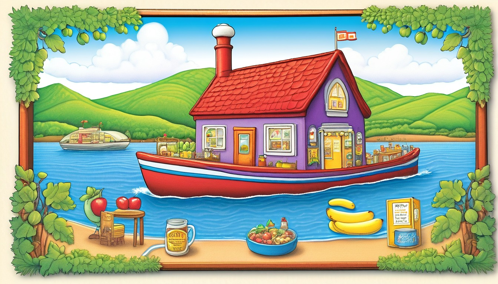

Sixteen paper cards help writers replace plain fictional words with precise nouns, clear verbs, useful describers, sentence swaps, rhythm checks, and final revised lines.
Audience: Families, homeschool groups, tutors, and adult-led writing tables for writers ages 6-11.
Format: 16 printable word-choice cards plus adult guide tools, word-choice routines, take-home word slips, and optional prompts
Family-safe printable writing pages for adult-led, offline story practice.
$67
Included
16 printable washi tape word choice cards
Adult setup guide
Fictional word-choice safety notes
Washi tape coaching moves
Family handoff notes
Pack reset notes
Six adult-led word choice routines
Ten take-home word slips
Eight optional prompts
Provider-ready PDF and ZIP artifact
Adult guide
Story word-choice coaching
Washi Tape Story Word Choice Adult Guide
Print the washi tape word choice cards, blank swap strips, and adult guide pages before the adult-led paper session.
Begin with one plain fictional line, then coach word choice through precise nouns, clear verbs, useful describing words, phrase swaps, sentence rhythm, and final revision.
Keep every example made-up, broad, offline, printable, and guided by an adult.
Use short tape strips to mark one word or phrase at a time so the writer can compare choices without crowding the page.
Replace narrow real details with pretend names, broad story places, and invented objects before writing begins.
End each activity by writing a final revised fictional line that sounds clearer, smoother, and more specific on paper.
Use one washi tape story word-choice card at a time. Keep every choice broad, invented, paper-only, and screen-free.
World menu
Sixteen word-choice-card worlds
Pick a world image, then revise one fictional sentence with a pretend washi tape story word-choice card.
Ages 6-8
Moon Muffin Market
Ages 6-8
Puddle Planet Post Office
Ages 7-9
Buttonwood Library Train
Ages 7-9
Button Bakery Map Mix-Up
Ages 7-8
Teacup Town Weather Window
Ages 7-9
Pocket Park Notice Board

Ages 7-9
Spoon Ferry Lunchbox Harbor
Ages 7-9
Acorn Avenue Errand Office
Ages 8-10
Seed Library Map Room
Ages 8-10
Rain Gauge Railway
Ages 8-10
Moss Message Observatory
Ages 8-10
Tidepool Timekeepers Lab
Ages 10-11
Revision River Ferry
Ages 10-11
Clue Label Tower Museum
Ages 10-11
Compass Craft Academy
Ages 10-11
Binding Day Boardwalk
Story word-choice routines
Choose the washi tape word-choice rhythm
Plain Line Tape Mark
Finding the first word in a fictional sentence that needs a clearer choice.
The adult writes one plain fictional line across the top of the page: ____________________.
The writer places a tape mark under one word that feels too general: ____________________.
The adult asks what job that word should do in the sentence: ____________________.
The writer rewrites the line with the marked word ready for a stronger swap: ____________________.
Precise Noun Strip
Replacing a vague thing word with a clearer pretend object or story place.
The adult circles one general noun in the plain line, such as thing, place, object, or piece: ____________________.
The writer lists two precise fictional noun choices that stay broad and made-up: ____________________.
The adult asks which noun gives the reader the clearest picture: ____________________.
The writer writes the sentence again with the chosen precise noun: ____________________.
Clear Verb Swap
Trading a flat action word for a verb that shows the movement.
The adult tapes over one plain verb in the fictional line: ____________________.
The writer chooses two clear verbs, such as slide, tuck, tilt, drift, fold, or tap: ____________________.
The adult asks which verb matches the pretend moment without adding extra facts: ____________________.
The writer writes the revised line with the clearer verb in place: ____________________.
Useful Describing Word Check
Keeping describing words that help and removing ones that only decorate.
The adult points to one describing word in the sentence or invites the writer to add one: ____________________.
The writer writes what the describing word tells the reader about size, color, shape, sound, or feel on paper: ____________________.
The adult asks whether the word helps the sentence or should be swapped for a better one: ____________________.
The writer writes the sentence with one useful describing word: ____________________.
Phrase Swap Lineup
Comparing two short phrases before choosing the cleaner sentence.
The adult writes the original phrase on one tape strip: ____________________.
The writer writes two possible phrase swaps on two fresh strips: ____________________.
The adult reads each phrase aloud softly from the paper and asks which one says the idea most clearly: ____________________.
The writer copies the chosen phrase into the revised sentence: ____________________.
Rhythm and Final Line
Making the revised sentence sound smooth on paper before finishing.
The adult places the revised sentence under the plain line for side-by-side checking: ____________________.
The writer marks one spot where the sentence feels bumpy, crowded, or too plain: ____________________.
The adult asks which word can move, change, or come out to improve the rhythm: ____________________.
The writer writes the final revised fictional line with precise words and smooth rhythm: ____________________.
Take-home word slips
Swap one word later
One paper pass | plain fictional line
Plain Line Slip
Write one made-up plain line that can be improved with stronger word choices: ____________________.
Ask which word feels too general and should get a tape mark: ____________________.
Brief adult-led pass | precise nouns
Precise Noun Slip
Swap one general noun for a precise pretend object, place cue, or story item: ____________________.
Ask which noun gives the clearest picture on paper: ____________________.
Single printable slip | clear verbs
Clear Verb Slip
Replace one flat verb with a clear verb that shows the action: ____________________.
Ask what movement the new verb helps the reader picture: ____________________.
Quiet pencil pass | useful describing words
Helpful Descriptor Slip
Add or swap one describing word that helps the reader see the pretend moment: ____________________.
Ask what the describing word adds that the sentence needs: ____________________.
Fresh slip pass | specific word choice
Too-General Word Slip
Find one word that feels too general and write a stronger replacement beside it: ____________________.
Ask why the replacement word is clearer than the first word: ____________________.
Tape strip pass | phrase swaps
Phrase Swap Slip
Write two short phrase swaps for the same fictional idea, then choose one: ____________________.
Ask which phrase says the idea with fewer extra words: ____________________.
Calm paper pass | sentence rhythm
Sentence Rhythm Slip
Copy the revised sentence and mark one spot that could sound smoother on paper: ____________________.
Ask which word could move, change, or come out for better rhythm: ____________________.
Second pencil pass | noun and verb pairing
Word Pair Slip
Pair one precise noun with one clear verb in a new fictional line: ____________________.
Ask how the noun and verb work together in the line: ____________________.
Short revision pass | clean revision
Cleaner Line Slip
Remove one extra word from the revised line so the meaning stays clear: ____________________.
Ask what changed after the extra word came out: ____________________.
Final paper pass | final revised line
Final Word Choice Slip
Write the final revised fictional line with one precise noun, one clear verb, and smooth rhythm: ____________________.
Ask what improved from the plain line to the final line: ____________________.
Optional share prompts
Optional adult-led offline prompt: the plain fictional line for word choice practice is ____________________.
Optional adult-led offline prompt: the general word I will mark with tape is ____________________.
Optional adult-led offline prompt: the precise noun I chose for the pretend moment is ____________________.
Optional adult-led offline prompt: the clear verb that shows the action is ____________________.
Optional adult-led offline prompt: the useful describing word that earns its place is ____________________.
Optional adult-led offline prompt: the phrase swap that says the idea clearly is ____________________.
Optional adult-led offline prompt: the word I changed for smoother sentence rhythm is ____________________.
Optional adult-led offline prompt: the final revised fictional line is ____________________.
Story Word Choice Card 1 | Ages 6-8 | choose precise market nouns, clear actions, and useful describers for one revised line
Moon Muffin Washi Tape Counter Words
Moon Muffin Market
Adult setup: Adult: Place this paper card beside blank paper and invite the writer to mark favorite word swaps with pretend tape strips: ____________________.
Writer: Make the market sentence clearer by swapping plain words for exact pretend nouns, verbs, and describers: ____________________.
Plain word
Plain words: The helper put the thing on the place: ____________________.
Precise noun
Precise noun: Replace thing and place with moon muffin tray, crumb card, counter mat, or another pretend market noun: ____________________.
Clear verb
Clear verb: Replace put with set, tucked, slid, balanced, or another clear market action: ____________________.
Useful describer
Useful describer: Add one helpful word such as silver, soft, warm, neat, or tiny only if it makes the picture clearer: ____________________.
Sentence swap
Phrase swap: Trade on the place for beside the moon tag, across the counter mat, or under the paper awning: ____________________.
Sound and shape check
Page rhythm: Try a short-short-long word pattern on paper, then mark the line that looks smoothest to read: ____________________.
Final line
Final revised fictional line: Combine one precise noun, one clear verb, and one useful describer into the best line: ____________________.
Quiet option: Circle one noun and one verb first, then write just the final line: ____________________. Take-home line: Revise another pretend moon muffin sentence by replacing thing and put: ____________________.
Story Word Choice Card 2 | Ages 6-8 | replace plain mail words with exact puddle post office nouns and active verbs
Puddle Planet Washi Tape Shell Slot
Puddle Planet Post Office
Adult setup: Adult: Set out this card, blank paper, and pretend tape marks for sorting word choices before the final line: ____________________.
Writer: Trade fuzzy mail words for exact objects, clear motions, and one useful describing word: ____________________.
Plain word
Plain words: The worker moved the thing to the spot: ____________________.
Precise noun
Precise noun: Replace worker, thing, and spot with mail helper, puddle note, shell slot, ripple stamp, or sorting tray: ____________________.
Clear verb
Clear verb: Replace moved with floated, slid, sorted, tucked, or stamped so the action is easy to picture: ____________________.
Useful describer
Useful describer: Add one helpful word such as round, neat, blue, curled, or tiny when it sharpens the pretend mail clue: ____________________.
Sentence swap
Phrase swap: Replace to the spot with into the shell slot, across the ripple tray, or beside the stamp card: ____________________.
Sound and shape check
Page rhythm: Build a line with one short phrase and one longer phrase so the sentence rests neatly on paper: ____________________.
Final line
Final revised fictional line: Write the puddle post office line with exact nouns, one clear verb, and no extra clutter: ____________________.
Quiet option: Underline the best noun swap first, then write one final sentence: ____________________. Take-home line: Try a second pretend puddle mail line by replacing worker and moved: ____________________.
Story Word Choice Card 3 | Ages 7-9 | revise a library train sentence with precise props, stronger verbs, and smoother rhythm
Buttonwood Washi Tape Ticket Line
Buttonwood Library Train
Adult setup: Adult: Place the card beside blank paper and ask the writer to test word swaps before choosing a final fictional line: ____________________.
Writer: Make the library train moment more exact by choosing the best prop noun, action verb, and rhythm: ____________________.
Plain word
Plain words: The traveler did something with the ticket near the place: ____________________.
Precise noun
Precise noun: Replace place with rolling shelf, station bookmark, buttonwood bench, ticket rail, or another pretend train noun: ____________________.
Clear verb
Clear verb: Replace did something with stamped, tucked, nudged, clipped, turned, or traced: ____________________.
Useful describer
Useful describer: Add one needed word such as folded, brass-colored, narrow, tidy, or quiet to guide the reader's picture: ____________________.
Sentence swap
Phrase swap: Change near the place into beside the rolling shelf, under the station bookmark, or along the ticket rail: ____________________.
Sound and shape check
Page rhythm: Compare a clipped sentence with a flowing sentence and choose the one that fits the train stop best: ____________________.
Final line
Final revised fictional line: Write one polished library train sentence using the strongest noun, verb, and phrase swap: ____________________.
Quiet option: Box the ticket noun and action verb before writing the final line: ____________________. Take-home line: Revise another pretend library train line by changing one vague noun and one weak verb: ____________________.
Story Word Choice Card 4 | Ages 7-9 | use exact map-table nouns, vivid verbs, and useful describers to clarify a mix-up
Button Bakery Washi Tape Map Mixup
Button Bakery Map Mix-Up
Adult setup: Adult: Set this card beside blank paper and keep every map mark invented while the writer tests word swaps: ____________________.
Writer: Make the map mix-up clearer by naming the right pretend object, action, and helpful detail: ____________________.
Plain word
Plain words: The helper fixed the thing on the map: ____________________.
Precise noun
Precise noun: Replace thing and map with crumb map, button marker, tray compass, ribbon path, or paper path card: ____________________.
Clear verb
Clear verb: Replace fixed with rotated, matched, unfolded, traced, aligned, or nudged: ____________________.
Useful describer
Useful describer: Add one useful word such as crooked, speckled, folded, tidy, or tiny when it explains the mix-up: ____________________.
Sentence swap
Phrase swap: Trade on the map for beside the button marker, across the ribbon path, or under the crumb-map corner: ____________________.
Sound and shape check
Page rhythm: Arrange the sentence so the mix-up clue comes first or last, then pick the clearer paper version: ____________________.
Final line
Final revised fictional line: Write the button bakery map line with one precise noun, one clear verb, and one useful describer: ____________________.
Quiet option: Draw two pretend map marks, circle the better noun, and write the final line: ____________________. Take-home line: Make another pretend map sentence clearer by replacing thing, fixed, and on the map: ____________________.
Story Word Choice Card 5 | Ages 7-8 | choose exact weather-window nouns and clean verbs for a smooth revised sentence
Teacup Town Washi Tape Weather Window
Teacup Town Weather Window
Adult setup: Adult: Place this card beside blank paper and invite the writer to mark the clearest weather-window word choices: ____________________.
Writer: Improve the tiny weather sentence by choosing an exact object, a clean action, and one useful describer: ____________________.
Plain word
Plain words: The watcher put the thing by the window: ____________________.
Precise noun
Precise noun: Replace thing and window with weather card, cup sill, cloud tag, pane strip, or forecast ribbon: ____________________.
Clear verb
Clear verb: Replace put with lifted, tucked, tilted, slid, rested, or pinned on paper: ____________________.
Useful describer
Useful describer: Add one helpful word such as misty, pale, tiny, snug, or clear only where it helps the scene: ____________________.
Sentence swap
Phrase swap: Change by the window into against the cup sill, across the pane strip, or under the cloud tag: ____________________.
Sound and shape check
Page rhythm: Try the describing word before the noun and after the verb, then choose the smoother written line: ____________________.
Final line
Final revised fictional line: Write one Teacup Town line with exact weather nouns and a clean action verb: ____________________.
Quiet option: Choose one weather noun and one action verb, then write only the final line: ____________________. Take-home line: Revise another tiny weather-window sentence by replacing thing and put: ____________________.
Story Word Choice Card 6 | Ages 7-9 | tighten a notice-board sentence with precise nouns, active verbs, and balanced phrase swaps
Pocket Park Washi Tape Notice Board
Pocket Park Notice Board
Adult setup: Adult: Set this card beside blank paper and remind the writer to invent every notice, board, and park detail: ____________________.
Writer: Make the notice-board sentence clearer by replacing dull words with exact paper-scene choices: ____________________.
Plain word
Plain words: The keeper put the paper on the board: ____________________.
Precise noun
Precise noun: Replace paper and board with leaf notice, board corner, bench label, path arrow, or tiny notice rail: ____________________.
Clear verb
Clear verb: Replace put with aligned, smoothed, posted, tucked, clipped, or squared: ____________________.
Useful describer
Useful describer: Add one helpful word such as crisp, green, square, bright, or narrow when it makes the notice clearer: ____________________.
Sentence swap
Phrase swap: Trade on the board for along the notice rail, beneath the bench label, or beside the path arrow: ____________________.
Sound and shape check
Page rhythm: Move the phrase swap to the beginning or end of the sentence and choose the version that reads cleanly on paper: ____________________.
Final line
Final revised fictional line: Write one pocket park notice sentence with the strongest noun, verb, describer, and phrase swap: ____________________.
Quiet option: Mark the best phrase swap with a pretend tape strip, then write the final line: ____________________. Take-home line: Revise another pretend notice-board line by replacing paper, put, and on the board: ____________________.
Story Word Choice Card 7 | Ages 7-9 | replace plain ferry words with exact nouns and clear verbs
Spoon Ferry Lunchbox Harbor Word Choice Card
Spoon Ferry Lunchbox Harbor
Adult setup: Adult: print this card and set out pencil, paper, and a pretend paper tape strip for the lunchbox harbor line: ____________________.
Writer: swap plain words for precise nouns, clear verbs, one useful describer, and a final fictional ferry line: ____________________.
Plain word
Plain words: The thing went to the place. Replace thing and place with exact ferry nouns: ____________________.
Precise noun
Precise noun: choose spoon ferry, lid dock, napkin pier, or cargo label for the main object: ____________________.
Clear verb
Clear verb: choose glided, docked, nudged, or tipped to show the ferry action: ____________________.
Useful describer
Useful describer: add one word such as patterned, tiny, tidy, or silver only if it helps the reader picture the line: ____________________.
Sentence swap
Phrase swap: replace went to with glided beside, docked at, or nudged past: ____________________.
Sound and shape check
Paper rhythm: mark the phrase break that makes the ferry sentence smooth on the page: ____________________.
Final line
Final revised fictional line: write one lunchbox harbor sentence with a precise noun and clear verb: ____________________.
Quiet option: circle one noun and one verb, then write only the final ferry line: ____________________. Take-home line: invent another spoon ferry sentence and trade two plain words for exact ones: ____________________.
Story Word Choice Card 8 | Ages 7-9 | choose office nouns and verbs that make a paper errand clear
Acorn Avenue Errand Office Word Choice Card
Acorn Avenue Errand Office
Adult setup: Adult: print this card and choose one pretend office object such as an acorn slip, twig tray, or seed stamp: ____________________.
Writer: make the acorn errand line clearer by naming the object, choosing the action, and trimming vague words: ____________________.
Plain word
Plain words: The worker did the job with the stuff. Replace worker, job, and stuff with exact office words: ____________________.
Precise noun
Precise noun: choose leaf clerk, acorn slip, twig tray, seed stamp, or label stack for the sentence: ____________________.
Clear verb
Clear verb: choose filed, stacked, stamped, slid, or sorted to show the errand action: ____________________.
Useful describer
Useful describer: add one word such as folded, neat, small, or numbered if it gives helpful detail: ____________________.
Sentence swap
Phrase swap: replace did the job with filed the slip, stamped the label, or stacked the tray: ____________________.
Sound and shape check
Paper rhythm: try the shorter phrase and the longer phrase, then choose the one that reads cleanly on the page: ____________________.
Final line
Final revised fictional line: write one acorn office sentence with exact nouns and a clear action: ____________________.
Quiet option: underline the clearest verb and write the revised acorn office sentence: ____________________. Take-home line: make a new acorn errand line and swap one vague word for a precise noun: ____________________.
Story Word Choice Card 9 | Ages 8-10 | build a map-table line with specific nouns, verbs, and phrase swaps
Seed Library Map Room Word Choice Card
Seed Library Map Room
Adult setup: Adult: print this card and pick one invented seed card, folded map, or shelf label for paper-only practice: ____________________.
Writer: revise the map table line by replacing general words with exact objects, movement verbs, and a smoother phrase: ____________________.
Plain word
Plain words: The person looked at the map thing. Replace person and map thing with exact seed-library nouns: ____________________.
Precise noun
Precise noun: choose seed keeper, map drawer, bean marker, card pocket, or shelf label for the line: ____________________.
Clear verb
Clear verb: choose unfolded, traced, tucked, compared, or marked to show the map-table action: ____________________.
Useful describer
Useful describer: add one focused word such as folded, creased, tiny, or labeled when it sharpens the picture: ____________________.
Sentence swap
Phrase swap: replace looked at with traced along, compared with, or unfolded beside: ____________________.
Sound and shape check
Paper rhythm: move one phrase to the front or end and choose the version with the clearest sentence flow: ____________________.
Final line
Final revised fictional line: write one seed-library map table sentence with exact words and smooth rhythm: ____________________.
Quiet option: box the precise noun, circle the clear verb, and write the final map table line: ____________________. Take-home line: invent another seed-library line and replace two general words with exact choices: ____________________.
Story Word Choice Card 10 | Ages 8-10 | revise railway sentences with exact gauge nouns and active verbs
Rain Gauge Railway Word Choice Card
Rain Gauge Railway
Adult setup: Adult: print this card and choose a pretend gauge mark, platform flag, or rail label for the writer to name: ____________________.
Writer: make the rain railway sentence clearer by choosing exact gauge nouns, active verbs, and one useful describing word: ____________________.
Plain word
Plain words: The train person moved the rain thing. Replace train person and rain thing with precise railway nouns: ____________________.
Precise noun
Precise noun: choose rain conductor, gauge bead, platform flag, rail label, or puddle platform for the line: ____________________.
Clear verb
Clear verb: choose measured, aligned, signaled, rolled, or checked to show the paper railway action: ____________________.
Useful describer
Useful describer: add one word such as even, clear, blue, or narrow only if it helps the reader see the object: ____________________.
Sentence swap
Phrase swap: replace moved with aligned the flag, measured the mark, or rolled past the platform: ____________________.
Sound and shape check
Paper rhythm: choose whether the gauge detail belongs before or after the action for the cleanest line: ____________________.
Final line
Final revised fictional line: write one rain gauge railway sentence with precise nouns and a clear verb: ____________________.
Quiet option: choose one gauge noun and one action verb, then write the final railway line: ____________________. Take-home line: create another rain railway line and replace moved with a clearer verb: ____________________.
Story Word Choice Card 11 | Ages 8-10 | shape an observatory line with precise nouns, clear verbs, and sentence rhythm
Moss Message Observatory Word Choice Card
Moss Message Observatory
Adult setup: Adult: print this card and pick one pretend moss note, pebble lens, or sky chart for paper-only revision: ____________________.
Writer: replace vague words in the observatory line with exact nouns, clear verbs, helpful describers, and a final polished sentence: ____________________.
Plain word
Plain words: The watcher found the thing on the shelf. Replace watcher, thing, and shelf with exact observatory words: ____________________.
Precise noun
Precise noun: choose sky watcher, moss note, pebble lens, sky chart, or message shelf for the line: ____________________.
Clear verb
Clear verb: choose uncovered, tilted, traced, tucked, or studied to show the observatory action: ____________________.
Useful describer
Useful describer: add one word such as soft, speckled, curved, or quiet when it adds a clear clue: ____________________.
Sentence swap
Phrase swap: replace found the thing with uncovered the moss note, tilted the pebble lens, or traced the sky chart: ____________________.
Sound and shape check
Paper rhythm: test a short opening phrase and choose the version that gives the final line a smooth shape: ____________________.
Final line
Final revised fictional line: write one moss observatory sentence with exact words and balanced rhythm: ____________________.
Quiet option: mark one precise noun and one useful describer, then write the final observatory line: ____________________. Take-home line: invent another moss message line and trade one vague phrase for a precise one: ____________________.
Story Word Choice Card 12 | Ages 8-10 | use one surface word on paper
Tidepool Timekeepers Lab Surface Strip
Tidepool Timekeepers Lab
Adult setup: Adult: place this card beside blank paper and one pretend washi strip, then keep every example broad and fictional: ____________________.
Writer: choose one plain tidepool word, then replace it with a precise noun, clear verb, or useful describing word: ____________________.
Plain word
Plain word: write a bland word from the shell-note sentence, such as thing, moved, nice, or place: ____________________.
Precise noun
Precise noun: choose one invented tidepool object such as shell dial, bead tray, pool tag, or paper bell: ____________________.
Clear verb
Clear verb: replace moved with a verb the reader can picture, such as nudged, lined up, tilted, or slid: ____________________.
Useful describer
Useful describer: add one surface word, such as rippled, smooth, dotted, or folded, only if it sharpens the picture: ____________________.
Sentence swap
Sentence swap: rewrite The timekeeper moved the thing with sharper tidepool words: ____________________.
Sound and shape check
Sound and shape check: read the revised line on paper and mark the word that makes the sentence rhythm clearer: ____________________.
Final line
Final line: copy the revised fictional tidepool sentence in its clearest form: ____________________.
Quiet option: circle one stronger tidepool word and write only the final line: ____________________. Carry-on line: make another tidepool lab sentence clearer by changing one plain word: ____________________.
Story Word Choice Card 13 | Ages 10-11 | tighten a sentence with fewer words
Revision River Ferry Trimmed Wake
Revision River Ferry
Adult setup: Adult: set out this card with blank paper and a pretend ferry draft strip, then invite one short fictional revision: ____________________.
Writer: find a wordy ferry sentence, cross out extra words, and choose one exact noun or verb to carry more meaning: ____________________.
Plain word
Plain word: write the wordy phrase from the ferry line, such as the sign that was on the deck or did a change: ____________________.
Precise noun
Precise noun: choose one exact ferry noun such as draft sign, dock tag, margin rope, or folded oar marker: ____________________.
Clear verb
Clear verb: replace did a change with adjusted, trimmed, straightened, tucked, or another clear action: ____________________.
Useful describer
Useful describer: add one describing word only if it earns its space, such as narrow, neat, tilted, or crisp: ____________________.
Sentence swap
Sentence swap: change The ferry helper did a change to the sign that was on the deck into a tighter sentence: ____________________.
Sound and shape check
Sound and shape check: read both versions on paper and mark the shorter line that still sounds complete: ____________________.
Final line
Final line: copy the tightened fictional ferry sentence with no extra filler words: ____________________.
Quiet option: draw a small slash through one extra word, then copy the tightened line: ____________________. Carry-on line: tighten one new ferry sentence by trading a long phrase for one clear word: ____________________.
Story Word Choice Card 14 | Ages 10-11 | choose a verb before adding describing words
Clue Label Tower Museum Verb Lift
Clue Label Tower Museum
Adult setup: Adult: place this card beside blank paper and a pretend label strip, then ask for a fictional tower-museum action: ____________________.
Writer: choose the action word before adding any describing words, so the clue-label sentence moves clearly: ____________________.
Plain word
Plain word: write a weak action from the label sentence, such as put, made, got, or went: ____________________.
Precise noun
Precise noun: choose one tower-museum noun such as label rail, clue drawer, pointer card, or display tag: ____________________.
Clear verb
Clear verb: replace the weak action with arranged, lifted, tucked, balanced, or another verb that shows the movement: ____________________.
Useful describer
Useful describer: after the verb works, add one describer such as narrow, gleaming, tiny, or tilted if it helps: ____________________.
Sentence swap
Sentence swap: rewrite The clue keeper put the label by the case with a verb that does more work: ____________________.
Sound and shape check
Sound and shape check: tap the verb on paper and mark whether the sentence sounds cleaner before or after the describer: ____________________.
Final line
Final line: copy the revised fictional tower-museum sentence with the clear verb leading the action: ____________________.
Quiet option: underline the verb first, then write one revised label sentence: ____________________. Carry-on line: revise another clue-label sentence by choosing the verb before adding a describer: ____________________.
Story Word Choice Card 15 | Ages 10-11 | compare two word choices on paper
Compass Craft Academy Choice Pair
Compass Craft Academy
Adult setup: Adult: give the writer blank paper with two pretend washi choice strips and keep the compass-craft scene invented: ____________________.
Writer: write two possible words, compare what each one shows, then choose the word that fits the sentence job: ____________________.
Plain word
Plain word: write the vague compass-craft word you want to replace, such as tool, made, good, or part: ____________________.
Precise noun
Precise noun: choose two possible craft nouns, such as paper needle, bead marker, fold guide, or compass card: ____________________.
Clear verb
Clear verb: compare two verbs, such as balanced and dropped or traced and marked, then choose the clearer action: ____________________.
Useful describer
Useful describer: test one describer, such as steady, bent, bright, or careful, and keep it only if it changes the picture: ____________________.
Sentence swap
Sentence swap: rewrite The crafter made the tool twice, once with each word choice: ____________________.
Sound and shape check
Sound and shape check: read both compass-craft versions on paper and mark the line that sounds smoother: ____________________.
Final line
Final line: copy the revised fictional compass-craft sentence with the chosen word: ____________________.
Quiet option: circle A or B on the two choice strips, then copy the chosen sentence: ____________________. Carry-on line: compare two words for one new compass-craft sentence before writing the final line: ____________________.
Story Word Choice Card 16 | Ages 10-11 | copy the clearest revised line
Binding Day Boardwalk Final Line
Binding Day Boardwalk
Adult setup: Adult: place the card beside blank paper and a pretend booklet strip, then frame the boardwalk moment as fully fictional: ____________________.
Writer: revise one boardwalk sentence, choose the clearest version, and copy it carefully as the final line: ____________________.
Plain word
Plain word: write the plain boardwalk word or phrase, such as closed it, nice booklet, went over, or small thing: ____________________.
Precise noun
Precise noun: choose one exact boardwalk noun such as booklet clasp, thread loop, page rail, or promise slip: ____________________.
Clear verb
Clear verb: replace closed it or went over with clasped, folded, sealed, tucked, or another visible action: ____________________.
Useful describer
Useful describer: add one useful word such as neat, warm, narrow, or bright only if it helps the reader picture the page: ____________________.
Sentence swap
Sentence swap: rewrite The helper closed it at the boardwalk stand with sharper nouns and verbs: ____________________.
Sound and shape check
Sound and shape check: read the revised line on paper and mark the place where the sentence rhythm feels smoothest: ____________________.
Final line
Final line: copy the clearest revised fictional boardwalk sentence as the line you would keep: ____________________.
Quiet option: copy only the final line and underline the word that improved it most: ____________________. Carry-on line: choose one plain boardwalk word, replace it, and copy the revised line on paper: ____________________.